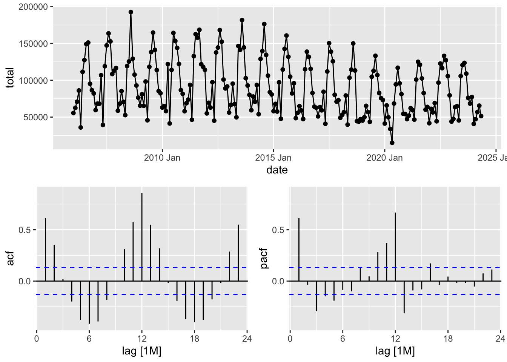

Chapter 6 ARIMA and seasonal ARIMA (sARIMA)
How to choose \(ARIMA(p,0,q), ARIMA(p,1,q)\) or \(ARIMA(p,2,q)\)?
- Looking at the plot. The variance of a stationary process is constant (approximately).
- Cross-validation
- Unit root test
- ARMA: only for stationary process
- ARIMA: for non-stationary process
6.1 Unit root test
## Rows: 24,852
## Columns: 4
## $ code <int64> 1000000000, 1000000000, 1000000000, 1000000000, 1000000000, 1000000000, 1000000000, 1000000000, 1000000000, 1000000000, 1000000000, 1000000000, 1…
## $ name <chr> "Алтайский край", "Алтайский край", "Алтайский край", "Алтайский край", "Алтайский край", "Алтайский край", "Алтайский край", "Алтайский край", "Ал…
## $ total <int> 953, 1007, 1311, 1554, 562, 1900, 2338, 3034, 2460, 1762, 1411, 1554, 1069, 1221, 1330, 1774, 609, 2107, 2708, 3272, 2483, 1825, 1721, 1940, 1006, …
## $ date <IDate> 2006-01-01, 2006-02-01, 2006-03-01, 2006-04-01, 2006-05-01, 2006-06-01, 2006-07-01, 2006-08-01, 2006-09-01, 2006-10-01, 2006-11-01, 2006-12-01, 2…ts_marriages <- m |>
mutate(date = yearmonth(date)) |>
as_tsibble(index = date, key = c('code', 'name'))
glimpse(ts_marriages)## Rows: 24,852
## Columns: 4
## Key: code, name [109]
## $ code <int64> 30, 30, 30, 30, 30, 30, 30, 30, 30, 30, 30, 30, 30, 30, 30, 30, 30, 30, 30, 30, 30, 30, 30, 30, 30, 30, 30, 30, 30, 30, 30, 30, 30, 30, 30, 30, 3…
## $ name <chr> "Центральный федеральный округ", "Центральный федеральный округ", "Центральный федеральный округ", "Центральный федеральный округ", "Центральный фе…
## $ total <int> 14845, 16414, 15753, 21803, 9384, 29571, 35691, 39263, 40480, 24137, 21207, 19009, 15433, 17430, 13878, 29703, 10529, 31572, 41328, 42609, 41779, 2…
## $ date <mth> 2006 Jan, 2006 Feb, 2006 Mar, 2006 Apr, 2006 May, 2006 Jun, 2006 Jul, 2006 Aug, 2006 Sep, 2006 Oct, 2006 Nov, 2006 Dec, 2007 Jan, 2007 Feb, 2007 Ma…
6.1.1 KPSS test
kpss_res <- ur.kpss(rf_m$total, type = 'mu')
# H0: ts = mu + stat (stationary)
# Ha: ts = mu + stat + rw
summary(kpss_res)##
## #######################
## # KPSS Unit Root Test #
## #######################
##
## Test is of type: mu with 4 lags.
##
## Value of test-statistic is: 0.7738
##
## Critical value for a significance level of:
## 10pct 5pct 2.5pct 1pct
## critical values 0.347 0.463 0.574 0.7396.1.2 ADF test
adf_res <- ur.df(rf_m$total, type = 'drift', selectlags = 'AIC')
# H0: non-stationary process ts = ARIMA(p,1,q) + trend
# Ha: stationary process ts = ARIMA(p,0,q) + const
summary(adf_res)##
## ###############################################
## # Augmented Dickey-Fuller Test Unit Root Test #
## ###############################################
##
## Test regression drift
##
##
## Call:
## lm(formula = z.diff ~ z.lag.1 + 1 + z.diff.lag)
##
## Residuals:
## Min 1Q Median 3Q Max
## -70353 -18928 -5031 15668 81259
##
## Coefficients:
## Estimate Std. Error t value Pr(>|t|)
## (Intercept) 3.599e+04 5.751e+03 6.257 2.08e-09 ***
## z.lag.1 -3.982e-01 5.971e-02 -6.669 2.12e-10 ***
## z.diff.lag 3.629e-02 6.802e-02 0.533 0.594
## ---
## Signif. codes: 0 '***' 0.001 '**' 0.01 '*' 0.05 '.' 0.1 ' ' 1
##
## Residual standard error: 29190 on 216 degrees of freedom
## Multiple R-squared: 0.1926, Adjusted R-squared: 0.1851
## F-statistic: 25.76 on 2 and 216 DF, p-value: 9.271e-11
##
##
## Value of test-statistic is: -6.6689 22.2376
##
## Critical values for test statistics:
## 1pct 5pct 10pct
## tau2 -3.46 -2.88 -2.57
## phi1 6.52 4.63 3.816.2 Seasonal ARIMA
How to choose: \(SARIMA(p, 0, q)(P, 0 , Q)\) or \(SARIMA(p, 0, q)(P, 1 , Q)[12]\)?
Step 1: How many times should I apply a seasonal differencing?
- Step 1: Apply STL decomposition \(y_t = trend_t + season_t + remainder_t\)
- Step 2: Calculate \(F_{season}\): \(F_{season} = max\{1 - \frac {sVar(remainder)}{sVar(season + remainder)}, 0\}\)
- Step 3: If \(F_{season}\) is below the threshold, then work with source series, otherwise, apply seasonal differencing. Repeat steps 1-3 for seasonally differenced series and apply a second difference if it’s needed.
Step 2: How many times should I apply a first differencing?
Apply the KPSS test with constant to the origin series:
- If \(H_0\) is not rejected, then work with the origin series, otherwise, apply the test to the first differenced series. Repeat the step, if \(H_0\) is rejected, then work with the second differenced test, otherwise, work with the first differenced series.
6.3 Automatic ARIMA

Observations:
- ACF is sinusoidal - it is typical for seasonal series
- PACF: non-seasonal is exponentially decaying, but there is one significant seasonal lag. AR(1) p=1 for no-seasonal part, and AR(1) P=1 for seasonal part.
train <- rf_m |> filter(date <= yearmonth('2022 May'))
models <- train |>
model(snaive = SNAIVE(total),
theta = THETA(total),
auto = ARIMA(total), # Khandakar-Hyndman Method
sarima111_x11 = ARIMA(total ~ 0 + pdq(1,1,1) + PDQ(0:1,1,1))
)## Series: total
## Model: ARIMA(0,0,3)(0,1,1)[12] w/ drift
##
## Coefficients:
## ma1 ma2 ma3 sma1 constant
## 0.1508 0.2176 0.3891 -0.7403 -1879.372
## s.e. 0.0727 0.0646 0.0753 0.0671 518.162
##
## sigma^2 estimated as 155918872: log likelihood=-2010
## AIC=4032 AICc=4032.47 BIC=4051.32## Series: total
## Model: ARIMA(1,1,1)(0,1,1)[12]
##
## Coefficients:
## ar1 ma1 sma1
## -0.0025 -0.8337 -0.7910
## s.e. 0.1164 0.0933 0.0588
##
## sigma^2 estimated as 168236130: log likelihood=-2008.72
## AIC=4025.43 AICc=4025.66 BIC=4038.29## # A tibble: 4 × 10
## .model .type ME RMSE MAE MPE MAPE MASE RMSSE ACF1
## <chr> <chr> <dbl> <dbl> <dbl> <dbl> <dbl> <dbl> <dbl> <dbl>
## 1 auto Test -393. 1624. 1575. -0.535 1.50 0.126 0.0993 -0.5
## 2 sarima111_x11 Test -1092. 2870. 2654. -1.30 2.57 0.213 0.176 -0.5
## 3 snaive Test -3297 3415. 3297 -3.15 3.15 0.264 0.209 -0.5
## 4 theta Test 1738. 4602. 4261. 1.14 3.75 0.341 0.282 -0.5Using cross validation.
## # A tsibble: 9,720 x 5 [1M]
## # Key: .id, code, name [162]
## code name total date .id
## <int64> <chr> <int> <mth> <int>
## 1 643 Российская Федерация 55509 2006 Jan 1
## 2 643 Российская Федерация 62449 2006 Feb 1
## 3 643 Российская Федерация 70798 2006 Mar 1
## 4 643 Российская Федерация 86055 2006 Apr 1
## 5 643 Российская Федерация 35960 2006 May 1
## 6 643 Российская Федерация 111409 2006 Jun 1
## 7 643 Российская Федерация 127475 2006 Jul 1
## 8 643 Российская Федерация 149120 2006 Aug 1
## 9 643 Российская Федерация 151116 2006 Sep 1
## 10 643 Российская Федерация 95192 2006 Oct 1
## # ℹ 9,710 more rowsmodels_slide <- m_slide |>
model(snaive = SNAIVE(total),
theta = THETA(total),
auto = ARIMA(total), # Khandakar-Hyndman Method
)fc_slide <- models_slide |> forecast(h = 1)
fc_slide |> accuracy(rf_m) |> select(-code, -name, -.type)## Warning: The future dataset is incomplete, incomplete out-of-sample data will be treated as missing.
## 1 observation is missing at 2024 Jun## # A tibble: 3 × 9
## .model ME RMSE MAE MPE MAPE MASE RMSSE ACF1
## <chr> <dbl> <dbl> <dbl> <dbl> <dbl> <dbl> <dbl> <dbl>
## 1 auto -282. 14050. 11171. -2.00 15.1 0.886 0.831 0.171
## 2 snaive -1695. 16983. 12552. -4.82 17.2 0.996 1.00 0.368
## 3 theta -679. 13538. 10579. -2.98 14.2 0.839 0.801 0.0545model_agg <- models_slide |>
mutate(av3 = (auto + snaive + theta)/3,
auto_theta = (auto + theta)/2,
snaive_theta = (snaive + theta)/2)fc_slide_agg <- model_agg |> forecast(h = 1)
fc_slide_agg |> accuracy(rf_m) |> select(-code, -name, -.type)## Warning: The future dataset is incomplete, incomplete out-of-sample data will be treated as missing.
## 1 observation is missing at 2024 Jun## # A tibble: 6 × 9
## .model ME RMSE MAE MPE MAPE MASE RMSSE ACF1
## <chr> <dbl> <dbl> <dbl> <dbl> <dbl> <dbl> <dbl> <dbl>
## 1 auto -282. 14050. 11171. -2.00 15.1 0.886 0.831 0.171
## 2 auto_theta -481. 13008. 10135. -2.49 13.8 0.804 0.769 0.0833
## 3 av3 -885. 13233. 10178. -3.27 14.0 0.807 0.783 0.166
## 4 snaive -1695. 16983. 12552. -4.82 17.2 0.996 1.00 0.368
## 5 snaive_theta -1187. 13438. 10183. -3.90 14.1 0.808 0.795 0.182
## 6 theta -679. 13538. 10579. -2.98 14.2 0.839 0.801 0.05456.4 Output2Equations
## Series: total
## Model: ARIMA(2,1,1)(1,1,1)[12]
##
## Coefficients:
## ar1 ar2 ma1 sar1 sma1
## -0.9743 -0.5254 0.2502 0.0343 -0.7840
## s.e. 0.1423 0.0855 0.1680 0.0969 0.0723
##
## sigma^2 estimated as 166440821: log likelihood=-2005.93
## AIC=4023.86 AICc=4024.33 BIC=4043.15Interpretation:
- ARIMA(2,1,1)(1,1,1)[12]: (2,1,1) - non-seasonal part, (1,1,1) -
seasonal part:
- AR part:
- ARIMA(2,1,1)(1,1,1) - one non-seasonal lag, \(d=1\): \((1 - L)\)
- ARIMA(2,1,1)(1,1,1) - on seasonal lag, \(D=1\): \((1 - L^{12})\)
- ARIMA(2,1,1)(1,1,1) - AR non-seasonal part, \(p=2\), two non-seasonal AR params: \(ar1 = -0.9743\), \(ar2 = -0.5254\): \((1 - (-0.9743) \cdot L - (-0.5254)\cdot L^2)\)
- ARIMA(2,1,1)(1,1,1) - AR seasonal part, \(p=1\), one seasonal AR param: \(sar1 = 0.0343\): \((1 - (0.0343) \cdot L^{12})\)
- AR summary: \((1 - L) \cdot (1 - L^{12}) \cdot (1 - (-0.9743) \cdot L - (-0.5254)\cdot L^2) \cdot (1 - (0.0343) \cdot L^{12}) \cdot y_t\)
- MA part:
- ARIMA(2,1,1)(1,1,1) - one non-seasonal lag, \(q=1\), \(ma1 = 0.2502\): \((1 + 0.2502 \cdot L)\)
- ARIMA(2,1,1)(1,1,1) - one seasonal lag, \(Q=1\), \(sma1 = -0.7840\): \((1 - 0.7840 \cdot L^{12})\)
- MA summary: \((1 + 0.2502 \cdot L) \cdot (1 - 0.7840 \cdot L^{12}) \cdot u_t\), where \(u_t\) is white noise.
- AR part:
The equation: \[ (1 - L) \cdot (1 - L^{12}) \cdot (1 - (-0.9743) \cdot L - (-0.5254)\cdot L^2) \cdot (1 - (0.0343) \cdot L^{12}) \cdot y_t = \\(1 + 0.2502 \cdot L) \cdot (1 - 0.7840 \cdot L^{12}) \cdot u_t \]